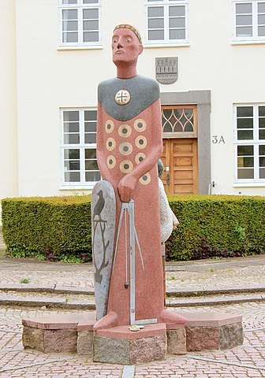

48077330 Esbern Asserson, Hvide, Snare
* omkring 1127 Fjenneslev, Sörö, Danmark
† omkring 1204 Säby gård, Holbeck, Danmark
Korsriddare
Blev ca 77 år
* omkring 1127 Fjenneslev, Sörö, Danmark
† omkring 1204 Säby gård, Holbeck, Danmark
Korsriddare
Blev ca 77 år

96154660 Asser Rig Skjalmsøn Hvide
* 1078 Fjenneslev, Sörö, Danmark
† 1151 Sorø kloster, Danmark
Jarl på Rygen, Jarl på Själland
Blev högst 73 år
* 1078 Fjenneslev, Sörö, Danmark
† 1151 Sorø kloster, Danmark
Jarl på Rygen, Jarl på Själland
Blev högst 73 år
96154648 Skjalm Tokesen Hvide
* före 1045 Fjenneslev, Sörö, Danmark
† efter 1102 Själland, Danmark
Riddare. Jarl över Själland och Rygen
Blev minst 58 år
* före 1045 Fjenneslev, Sörö, Danmark
† efter 1102 Själland, Danmark
Riddare. Jarl över Själland och Rygen
Blev minst 58 år
192309296 Toke Trylle
* efter 1000 Danmark
† mellan 1050 och 1080
Själländsk hövding
* efter 1000 Danmark
† mellan 1050 och 1080
Själländsk hövding
96154649 Signe Asbjörnsdatter
* omkring 1050 Danmark
† 1096 Fjenneslev, Sörö, Danmark
Blev ca 46 år
* omkring 1050 Danmark
† 1096 Fjenneslev, Sörö, Danmark
Blev ca 46 år
96154661 Inger Eriksdotter
* omkring 1100 Falster, Själland, Danmark
† 1157 Fjenneslev, Sörö, Danmark
Prinsessa
Blev ca 57 år
* omkring 1100 Falster, Själland, Danmark
† 1157 Fjenneslev, Sörö, Danmark
Prinsessa
Blev ca 57 år

192309322 Jarl Erik af Västergötland o Falster
* omkring 1080 Västergötland, Sverige
† efter 1131 Haraldsted, Ringsted, Själland, Danmark
* omkring 1080 Västergötland, Sverige
† efter 1131 Haraldsted, Ringsted, Själland, Danmark
192309323 Prinsessan Cecilie Knutsdatter af Danmark
* omkring 1086 Danmark
† omkring 1131 Haraldsted, Ringsted, Själland, Danmark
Prinsessa
Blev ca 45 år
* omkring 1086 Danmark
† omkring 1131 Haraldsted, Ringsted, Själland, Danmark
Prinsessa
Blev ca 45 år

384618646 Kung Knut den Helige (den IV) Svendsen
* mellan 1040 och 1043 Roskilde, Danmark
† 1086-07-10 Odense, Danmark
Kung av Danmark
Blev högst 46 år
* mellan 1040 och 1043 Roskilde, Danmark
† 1086-07-10 Odense, Danmark
Kung av Danmark
Blev högst 46 år

384618647 Drottning Adele av Flandern
* efter 1064 Comte' de Flandre, Frankrike
† 1115-04 Duchi di Puglia et Calabria, Italien
* efter 1064 Comte' de Flandre, Frankrike
† 1115-04 Duchi di Puglia et Calabria, Italien